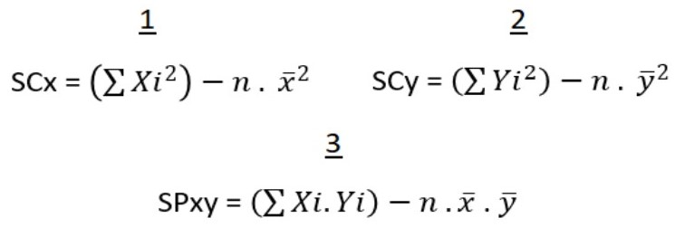

REGRESIÓN LINEAL
Primero, un video para entender qué es la regresión lineal
Ahora si, comencemos con los pasos para realizar la regresión lineal.
Paso 1
Armamos una tabla con todas las muestras, los valores de la variable X y los valores de la variable Y. Al final de estas columnas, colocaremos una celda con la sumatoria de todos los valores que escribimos.
n será cada muestra obtenida.
X será la variable independiente, o también llamada explicativa.
Y será la variable dependiente, o también conocida como explicada.
Así, hemos obtenido una tabla de 3 columnas.
Paso 2
A nuestra tabla le agregamos otras columnas a la derecha, cuyas sumatorias nos retornarán los "5 totales".
En la primera columna nueva, colocaremos el producto de XY (es decir, multiplicamos el valor de X y el de Y).
Al final de esta columna, haremos la sumatoria de todos los resultados obtenidos.
En la segunda columna nueva, colocaremos la potencia de X (es decir, elevamos X al cuadrado).
Al final de esta columna, haremos la sumatoria de todos los resultados obtenidos.
En la tercera columna nueva, colocaremos la potencia de Y (es decir, elevamos Y al cuadrado).
Al final de esta columna, haremos la sumatoria de todos los resultados obtenidos.
Paso 3

Calculamos los promedios de X y de Y.
Para calcular el promedio de X, usaremos la fórmula 1.
Para calcular el promedio de Y, usaremos la fórmula 2.
Paso 4
Calculamos las 3 sumas.
La Suma de Cuadrados de X (SCx) se calcula con la fórmula 1.
La Suma de Cuadrados de Y (SCy) se calcula con la fórmula 2.
La Suma de Productos de XY (SPxy) se calcula con la fórmula 3.
Paso 5
Calculamos los parámetros de la recta de regresión.
La Pendiente de la Recta (b1) se calcula con la fórmula 1.
La Ordenada al Origen (b0) se calcula con la fórmula 2.
Paso 6
Ya tenemos los valores que integran nuestra recta de regresión.
Ahora tocaría colocar diferentes valores en X para comenzar a dibujar la recta.